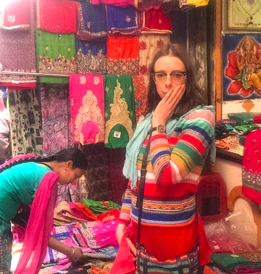
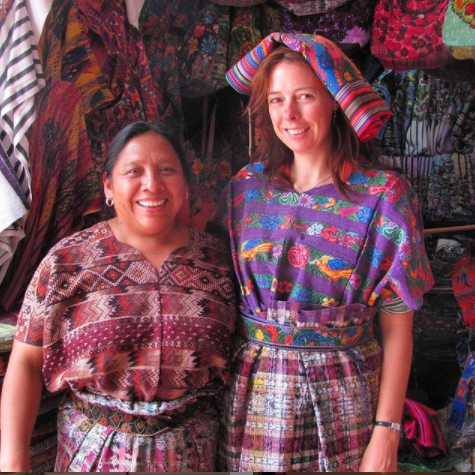
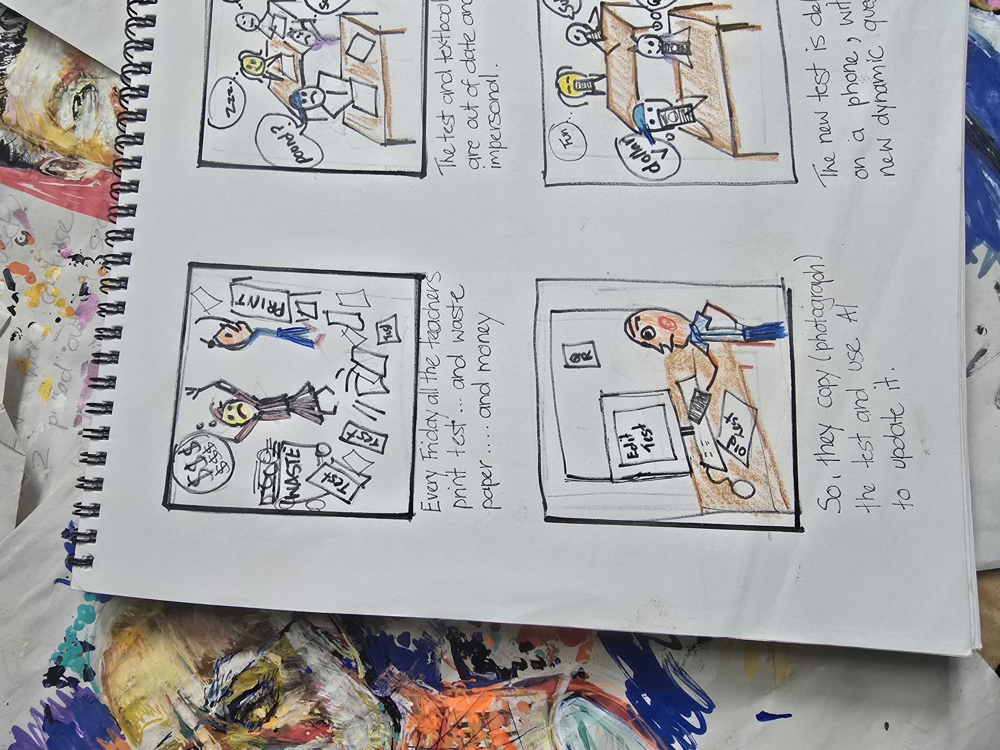
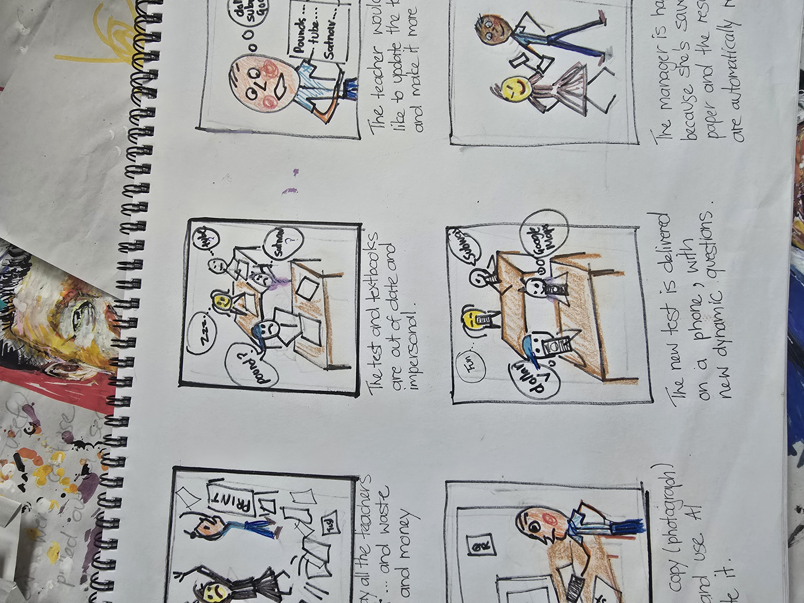
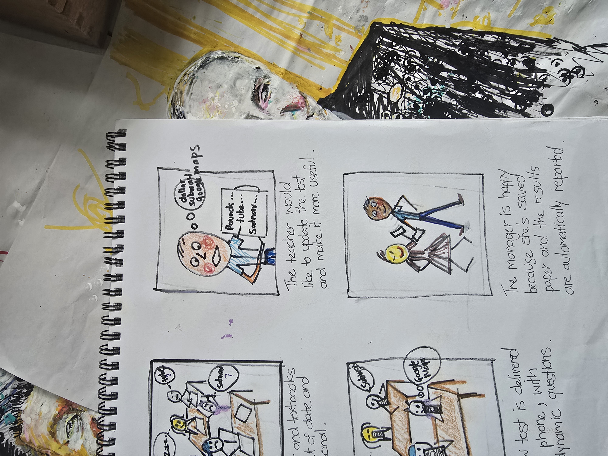

Why Me?
My work in learning design and educational technology is grounded in extensive experience as a qualified language teacher and teacher trainer, combined with a strong focus on UX-informed digital learning design. Having worked directly in language classrooms, I design flexible, teacher-centred systems that reflect real teaching conditions rather than idealised workflows.


Life So Far
I spent several years living and travelling throughout Latin America and Asia as a freelance journalist, writing for both print and digital publications, including Virgin Airline's magazine, Private Air Magazine and Australian Traveller. I also ghost‑wrote for a photographer, produced a lifestyle journal for a British footwear brand, and created content for adventure and luxury travel agencies. During this period, I began learning to decipher basic code, as some clients required me to work in the back end of their websites to upload images, update text and handle basic formatting. Please check at my work: Justine's Writing Portfolio
In 2018, I moved to India to work as an IELTS examiner, later returning to Sydney to examine for my former university, UTS, where I also conducted IELTS Masterclasses. During this time, I worked as a private tutor and carried out research into the PTE exam, which I also taught privately.
After Covid, I returned to classroom teaching for nearly four years while studying UX design. My main project during the course was a social media app designed without algorithmic feeds.
Frustrated by outdated classroom materials and the poor quality of many online resources, I began coding my own activities and tests. I attended every relevant industry seminar I could—from Duolingo to Pearson—to stay across developments in educational technology.
Education
- UX Design Professional Certificate Microsoft | 2025
- Master of Media Arts & Production University of Technology Sydney | 2006



Tools
- Articulate 360, H5P, Moodle and Learning Management Systems (LMSs)
- Adobe Creative Suite: Photoshop, Premiere Pro
- Microsoft Suite, Powerpoints
- HTML & CSS for UX design, websites and basic web applications
- Moodle expert- designing from the ground up (and other LMSs)
- Pencil and Paper
- Github
Skills
- HTML, CSS, Js for basic coding
- A Native editing AI audio and images
- Languages: English (Native), Spanish (Advanced), Japanese (Basic)
- Teaching and training in Japan, Mexico, Peru and Australia
- IELTS Facilitator – UTS Sydney & IDP India
- Trainer of ELICOS teachers (online and face-to-face) – Teach Australia & TEFL Online (2008–2009)
Qualifications & Professional Activity
- Media Arts & Production - UTS Sydney
- UX Design Certificate - Microsoft
- Cambridge CELTA Certificate – International House
- Certificate in AI Marketing – RMIT Melbourne
- Judge, ATOM Awards (2019–2022)